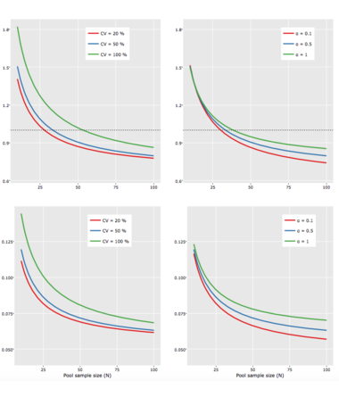
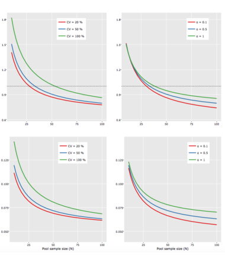
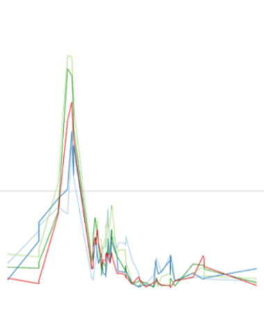
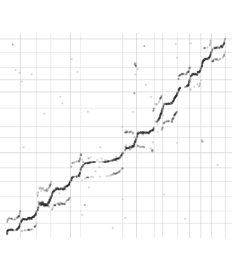
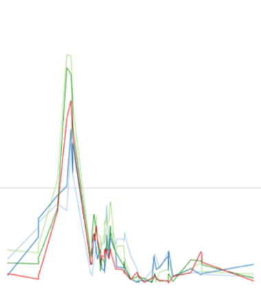
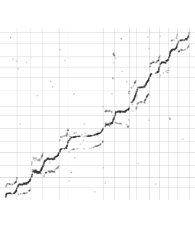

YAN
HOLTZ
Welcome to Yan Holtz's homepage.
I'm a data analysis and data visualisation specialist currently
working as a software engineer for Datadog.
YAN
HOLTZ
Welcome to Yan Holtz's homepage.
I'm a data analysis and data visualisation specialist currently
working as a software engineer for Datadog.

Hi, I'm Yan.
My job consists in helping companies and researchers to analyse their datasets. I am skilled for most data-science steps: data pre-processing, application of statistical methods, data visualization and results communication.
After having worked for renowned research institutes like the University of Queensland and private companies like Terres Inovia,I'm now working for Datadog.as a software engineer.
Master Degree
Data Analyst
Data Analyst
Data visualization
Data - Science - Viz
Mtp Supagaro
2012French Institute of Research
2016Terres Inovia
2017Qld Brain Institute
2019Freelance
Services
Let me help make better use of your data. My expertise can be used
to clean, analyse,
interpret and visualize
your data.
BLOG
A few stories about statistics, R, dataviz. More or less linked with our world, always related to data
July 2018 - 6 minutes read
I’m delighted to announce a new dataviz project called Data to Viz.
It is a classification of chart types based on input data format. It
comes in the form of a decision
tree
leading to a
set of potentially appropriate visualizations to represent the dataset. - Read more
July 2018 - 2 minutes read
R markdown creates interactive reports from R code. I’ve created a document that provides a few tips I use
on
a daily
basis to
improve the appearance of my html outputs (my memory aid). This document is built using R
Markdown
and hosted
on Github.
- Read more

Websites
I've developed several websites dedicated to data visualization. These resources are visited about 30.000 times a day.
A classification of charts based on their input format, and a lot of tips and tricks.
VisitPORTFOLIO
A glimpse of the projects I've been working on


 

 



"[...] Yan did an absolutely brilliant job. He has multiple skills and qualities making him a great data science project member, and even leader : excellent knowledge and learning ability of diverse statistical and data management tools obviously, and a real knack for data viz." D. Gouache - Deputy Director at Terres Inovia
CONTACT
Feel free to contact me for any question. For open source projects, please open an issue or pull request on Github. If you want to follow my work, reach me on Twitter. Otherwise, send me an email at yan.holtz.data@gmail.com.